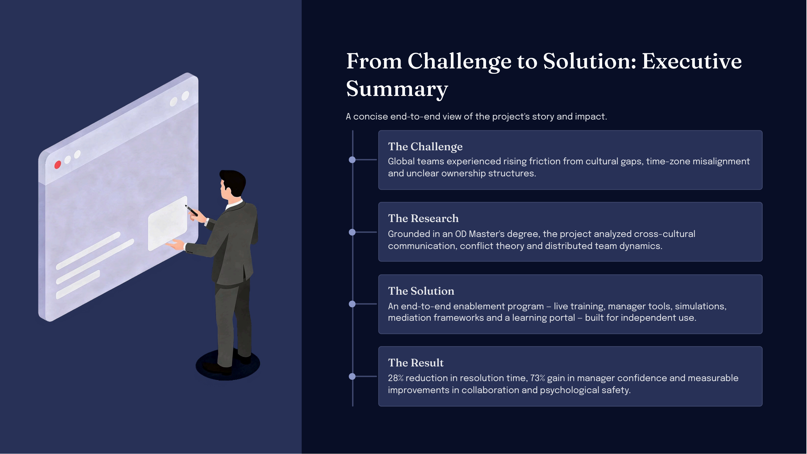
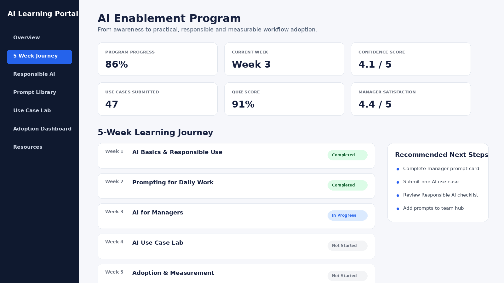
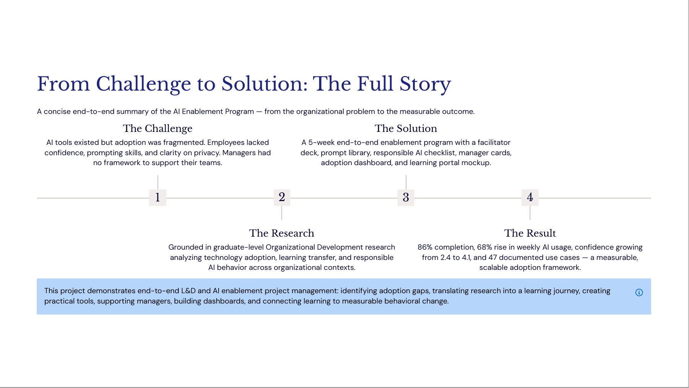
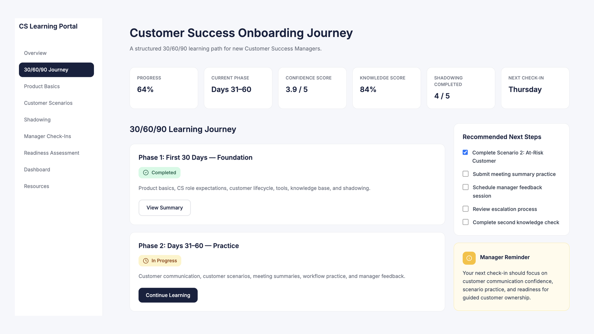
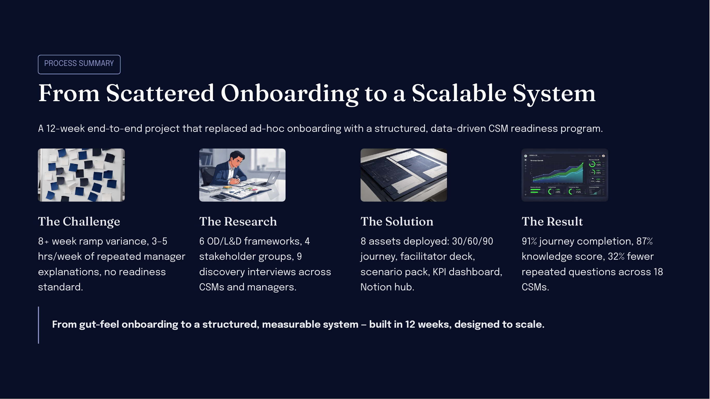
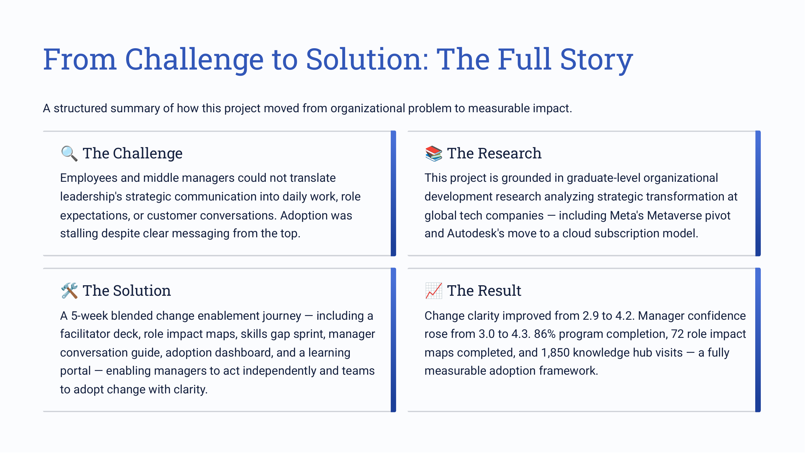

Portfolio Projects
Four end-to-end strategic projects — from academic research to practical HR, L&D, and People Operations solutions, built and measured for real organizational impact.

Global Conflict Management
Translating academic research into a practical managerial toolkit for distributed global teams.
Management Case Study Snapshot

Task breakdown, roadmap, milestones, responsibilities, risks, execution tracking and data-based project management.
פירוק למשימות, Roadmap, אבני דרך, תחומי אחריות, סיכונים, מעקב ביצוע וניהול פרויקט מבוסס דאטה.


AI Enablement Program
Building AI confidence through structured enablement — turning AI from a threatening tool into a daily work method.
Management Case Study Snapshot


CSM Onboarding Journey 30/60/90
Structured onboarding journey reducing ramp-up time and improving employee retention from day one.
Management Case Study Snapshot

Task breakdown, roadmap, milestones, responsibilities, risks, execution tracking and data-based project management.
פירוק למשימות, Roadmap, אבני דרך, תחומי אחריות, סיכונים, מעקב ביצוע וניהול פרויקט מבוסס דאטה.


Change Readiness & Learning Enablement
5-week change enablement program bridging executive strategy and frontline adoption.
Management Case Study Snapshot

Task breakdown, roadmap, milestones, responsibilities, risks, execution tracking and data-based project management.
פירוק למשימות, Roadmap, אבני דרך, תחומי אחריות, סיכונים, מעקב ביצוע וניהול פרויקט מבוסס דאטה.